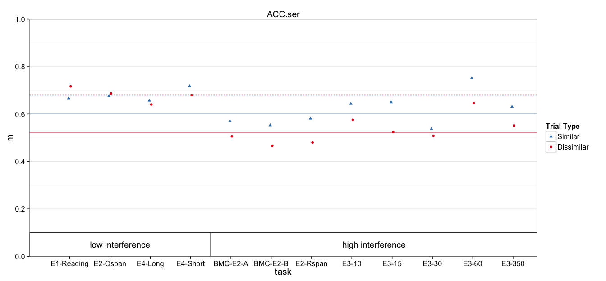

Multilevel model of accuracy
Loading required package: Matrix
Attaching package: 'Matrix'
The following object is masked from 'package:reshape':
expand
Loading required package: Rcpp
Params:
params
$dv_var
[1] "ACC.ser"
$nsim
[1] 10000
$plot_ymax
[1] 1
$plot_yshift
[1] 0
Read in data
DV_VAR = params$dv_var
all.dat = read.csv('data/1_scored.csv')
all.dat$Subject = factor(all.dat$Subject)
all.dat$dv = all.dat[,DV_VAR]
# Remove regular ospan, which has substantially lower accuracy
# due to verification requirements
dat = subset(all.dat, !task %in% 'Ospan.reg')
# Mark high and low interference conditions
low_int = c('spOspan.noVer', 'Ospan.scram.noVer', 'Rspan.names.long', 'Rspan.names.short', 'Ospan.reg')
dat$interference = ifelse(dat$task %in% low_int, 'low', 'high')
Models
dat$cond = paste(dat$interference, dat$trialtype)
contrasts(dat$trialtype) <- c(0,1) # similarity increment
Model with recall predictions for each interference:trialtype explicit
fit.mlm = lmer(dv ~ 0 + cond + (1 | task:Subject) + (1 | task), data=dat)
summary(fit.mlm)
Linear mixed model fit by REML ['lmerMod']
Formula: dv ~ 0 + cond + (1 | task:Subject) + (1 | task)
Data: dat
REML criterion at convergence: -382.4
Scaled residuals:
Min 1Q Median 3Q Max
-2.03890 -0.51960 -0.00493 0.52105 2.07599
Random effects:
Groups Name Variance Std.Dev.
task:Subject (Intercept) 2.435e-02 0.156030
task (Intercept) 4.146e-05 0.006439
Residual 6.832e-03 0.082654
Number of obs: 368, groups: task:Subject, 184; task, 12
Fixed effects:
Estimate Std. Error t value
condhigh D 0.52188 0.01685 30.97
condhigh S 0.60274 0.01685 35.77
condlow D 0.68184 0.02106 32.38
condlow S 0.67901 0.02106 32.25
Correlation of Fixed Effects:
cndhgD cndhgS cndlwD
condhigh S 0.785
condlow D 0.000 0.000
condlow S 0.000 0.000 0.786
Same model contrast coded for similarity benefit
fit.mlm.con = lmer(dv ~ 0 + interference/trialtype + (1 | task:Subject) + (1 | task), data=dat)
summary(fit.mlm.con)
Linear mixed model fit by REML ['lmerMod']
Formula: dv ~ 0 + interference/trialtype + (1 | task:Subject) + (1 | task)
Data: dat
REML criterion at convergence: -382.4
Scaled residuals:
Min 1Q Median 3Q Max
-2.03890 -0.51960 -0.00493 0.52105 2.07599
Random effects:
Groups Name Variance Std.Dev.
task:Subject (Intercept) 2.435e-02 0.156030
task (Intercept) 4.146e-05 0.006439
Residual 6.832e-03 0.082654
Number of obs: 368, groups: task:Subject, 184; task, 12
Fixed effects:
Estimate Std. Error t value
interferencehigh 0.521883 0.016851 30.97
interferencelow 0.681836 0.021058 32.38
interferencehigh:trialtype1 0.080853 0.011045 7.32
interferencelow:trialtype1 -0.002829 0.013776 -0.21
Correlation of Fixed Effects:
intrfrnch intrfrncl intrfrnch:1
interfrnclw 0.000
intrfrnch:1 -0.328 0.000
intrfrncl:1 0.000 -0.327 0.000
Same model contrast coded for interference benefit
fit.mlm.int = lmer(dv ~ 0 + trialtype/interference + (1 | task:Subject) + (1 | task), data=dat)
summary(fit.mlm.int)
Linear mixed model fit by REML ['lmerMod']
Formula: dv ~ 0 + trialtype/interference + (1 | task:Subject) + (1 | task)
Data: dat
REML criterion at convergence: -382.4
Scaled residuals:
Min 1Q Median 3Q Max
-2.03890 -0.51960 -0.00493 0.52105 2.07599
Random effects:
Groups Name Variance Std.Dev.
task:Subject (Intercept) 2.435e-02 0.156030
task (Intercept) 4.146e-05 0.006439
Residual 6.832e-03 0.082654
Number of obs: 368, groups: task:Subject, 184; task, 12
Fixed effects:
Estimate Std. Error t value
trialtypeD 0.52188 0.01685 30.97
trialtypeS 0.60274 0.01685 35.77
trialtypeD:interferencelow 0.15995 0.02697 5.93
trialtypeS:interferencelow 0.07627 0.02697 2.83
Correlation of Fixed Effects:
trltyD trltyS trltD:
trialtypeS 0.785
trltypD:ntr -0.625 -0.491
trltypS:ntr -0.491 -0.625 0.786
Why is task variance estimated to be 0?
Sanity check, injecting noise at task level. Note the accurate task variance estimates.
tmp_dat = ddply(dat, .(task), transform, dv = dv + rnorm(1, sd=.1))
fit.mlm2 = lmer(dv ~ 0 + cond + (1 | task:Subject) + (1 | task), data=tmp_dat)
summary(fit.mlm2)
Linear mixed model fit by REML ['lmerMod']
Formula: dv ~ 0 + cond + (1 | task:Subject) + (1 | task)
Data: tmp_dat
REML criterion at convergence: -373.8
Scaled residuals:
Min 1Q Median 3Q Max
-2.05499 -0.51661 0.00339 0.52422 2.06881
Random effects:
Groups Name Variance Std.Dev.
task:Subject (Intercept) 0.024097 0.15523
task (Intercept) 0.003452 0.05875
Residual 0.006832 0.08265
Number of obs: 368, groups: task:Subject, 184; task, 12
Fixed effects:
Estimate Std. Error t value
condhigh D 0.47286 0.02684 17.61
condhigh S 0.55371 0.02684 20.63
condlow D 0.70018 0.03597 19.47
condlow S 0.69735 0.03597 19.39
Correlation of Fixed Effects:
cndhgD cndhgS cndlwD
condhigh S 0.915
condlow D 0.000 0.000
condlow S 0.000 0.000 0.927
Another Sanity check, looking at task variance from ANOVA standpoint. Note that the F-value for task is 1 (no between task var beyond subject var)
fit.aov = aov(dv ~ interference + task + Error(task:Subject), data=dat)
Warning in aov(dv ~ interference + task + Error(task:Subject), data =
dat): Error() model is singular
summary(fit.aov)
Error: task:Subject
Df Sum Sq Mean Sq F value Pr(>F)
interference 1 1.228 1.2275 22.357 4.69e-06 ***
task 10 0.674 0.0674 1.227 0.277
Residuals 172 9.444 0.0549
---
Signif. codes: 0 '***' 0.001 '**' 0.01 '*' 0.05 '.' 0.1 ' ' 1
Error: Within
Df Sum Sq Mean Sq F value Pr(>F)
Residuals 184 1.61 0.008749
Confidence Intervals
Attaching package: 'boot'
The following object is masked from 'package:survival':
aml
The following object is masked from 'package:lattice':
melanoma
Computing bootstrap confidence intervals ...
2.5 % 97.5 %
sd_(Intercept)|task:Subject 0.13613751 0.17342647
sd_(Intercept)|task 0.00000000 0.04640465
sigma 0.07421224 0.09117062
condhigh D 0.48948082 0.55498645
condhigh S 0.56970322 0.63594401
condlow D 0.64082173 0.72236687
condlow S 0.63745372 0.71954698
Computing bootstrap confidence intervals ...
2.5 % 97.5 %
sd_(Intercept)|task:Subject 0.13650324 0.17365590
sd_(Intercept)|task 0.00000000 0.04474944
sigma 0.07429076 0.09108613
interferencehigh 0.48895606 0.55509559
interferencelow 0.64008397 0.72339610
interferencehigh:trialtype1 0.05892192 0.10198451
interferencelow:trialtype1 -0.02945740 0.02421941
Cohen's d
Here, I divided group differences by either the residual variance, or between-subject variance + residual variance.
$d_high
BOOTSTRAP CONFIDENCE INTERVAL CALCULATIONS
Based on 10000 bootstrap replicates
CALL :
boot.ci(boot.out = booted, type = c("norm", "perc"), index = ii)
Intervals :
Level Normal Percentile
95% ( 0.4887, 0.8898 ) ( 0.5003, 0.9002 )
Calculations and Intervals on Original Scale
$d_low
BOOTSTRAP CONFIDENCE INTERVAL CALCULATIONS
Based on 10000 bootstrap replicates
CALL :
boot.ci(boot.out = booted, type = c("norm", "perc"), index = ii)
Intervals :
Level Normal Percentile
95% (-0.2564, 0.2070 ) (-0.2555, 0.2098 )
Calculations and Intervals on Original Scale
$d_sub_high
BOOTSTRAP CONFIDENCE INTERVAL CALCULATIONS
Based on 10000 bootstrap replicates
CALL :
boot.ci(boot.out = booted, type = c("norm", "perc"), index = ii)
Intervals :
Level Normal Percentile
95% ( 0.2952, 0.5297 ) ( 0.3024, 0.5378 )
Calculations and Intervals on Original Scale
$d_sub_low
BOOTSTRAP CONFIDENCE INTERVAL CALCULATIONS
Based on 10000 bootstrap replicates
CALL :
boot.ci(boot.out = booted, type = c("norm", "perc"), index = ii)
Intervals :
Level Normal Percentile
95% (-0.1539, 0.1244 ) (-0.1530, 0.1250 )
Calculations and Intervals on Original Scale
Plotting
Means and Standard Errors
The following `from` values were not present in `x`: Ospan.reg
p +
geom_rect(aes(x=NULL, y=NULL, shape=NULL,xmin=xmin, xmax=xmax, ymin=ymin, ymax=ymax),
color='black', fill='white', data=group_annot) +
geom_text(aes(shape=NULL, color=NULL, x=text.x, y=text.y, label=label),
show_guide=FALSE, data=group_annot) + pub_theme + colors + shapes
Scale for 'colour' is already present. Adding another scale for 'colour', which will replace the existing scale.
Scale for 'shape' is already present. Adding another scale for 'shape', which will replace the existing scale.
ymax not defined: adjusting position using y instead

title: "1_mlm.R" author: "machow" date: "Wed Jan 13 11:45:16 2016"